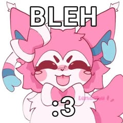
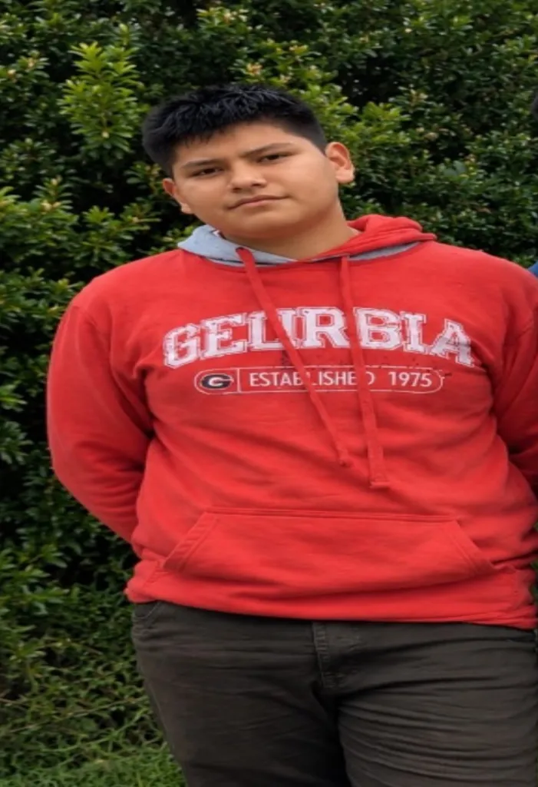

Bomboiza, 2011. En un rincón de la Amazonía ecuatoriana nació una criatura destinada a desafiar las leyes de la lógica, la paciencia de sus profesores y, ocasionalmente, el sentido común: Roberto Daniel Cevallos Molina. Hijo de Geovanny Cevallos y Areli Molina, conocida entre las leyendas familiares como la maestra del kéfir, Roberto creció rodeado de amor, enseñanzas y bacterias beneficiosas para la salud intestinal. Desde pequeño mostró habilidades extraordinarias para una disciplina que pocos dominan: hacerse el pendejo incluso cuando sabe perfectamente lo que está pasando. Con el transcurso de los años, Roberto empezó a descubrir su verdadera identidad. Mientras otros niños soñaban con convertirse en médicos, ingenieros o astronautas, él emprendió un camino más misterioso: el universo furro. Su curiosidad por los rincones más extraños de internet lo llevó a desarrollar una personalidad tan peculiar que ni los científicos de la NASA han conseguido clasificarla. Sin embargo, su vida no se limita a las aventuras digitales. Roberto encontró en Blood Strike un campo de batalla donde demostrar su valentía, aunque eso no significa necesariamente que sepa apuntar. Cada partida es una nueva oportunidad para alcanzar la gloria o echarle la culpa al internet. Otro capítulo fundamental de su existencia es su incondicional amor por el ping pong. Con una raqueta en la mano, Roberto deja de ser un simple mortal para transformarse en una amenaza deportiva, capaz de devolver pelotas imposibles y perder puntos que hasta un niño de cinco años habría ganado.
En medio de su caótica trayectoria académica apareció una persona que marcaría su historia: la profesora Katherlly Pruna. Su profesora favorita se convirtió en una figura importante dentro de su desarrollo personal y educativo. Entre explicaciones, tareas, preguntas y las inevitables ocasiones en las que Roberto decide hacerse el desentendido, se fue construyendo una relación de admiración y respeto estudiantil. Katherlly representa uno de los grandes desafíos de su vida: conseguir que Roberto utilice todo el potencial de su cerebro en lugar de dedicarlo exclusivamente a los videojuegos, al ping pong y a sus innumerables ocurrencias.
Como todo protagonista de una gran historia, Roberto ha atravesado diferentes etapas. Pasó de ser un niño inocente de Bomboiza a convertirse en un adolescente con gustos particulares, reflejos digitales, aspiraciones deportivas y una capacidad sobrenatural para evadir responsabilidades mediante una simple expresión de confusión. Su evolución no ha sido sencilla. Ha tenido que enfrentar derrotas en Blood Strike, partidos de ping pong, tareas escolares y el constante conflicto entre prestar atención en clases o pensar en absolutamente cualquier otra cosa. Pero detrás de sus bromas y excentricidades se encuentra un joven que sigue creciendo, aprendiendo y descubriendo quién quiere ser.
Hoy, Roberto Daniel Cevallos Molina continúa escribiendo su historia. Es un furro de corazón, un guerrero de Blood Strike, un apasionado del ping pong y un estudiante cuya mayor habilidad sigue siendo hacerse el pendejo con una naturalidad verdaderamente admirable. Su historia nos recuerda que no todos los héroes llevan capa. Algunos llevan una raqueta, otros un celular y otros probablemente una foto de perfil de un lobo antropomórfico. Roberto Daniel Cevallos Molina: nacido en Bomboiza, criado con kéfir, formado por las circunstancias y convertido por el destino en una gran criaturita.
